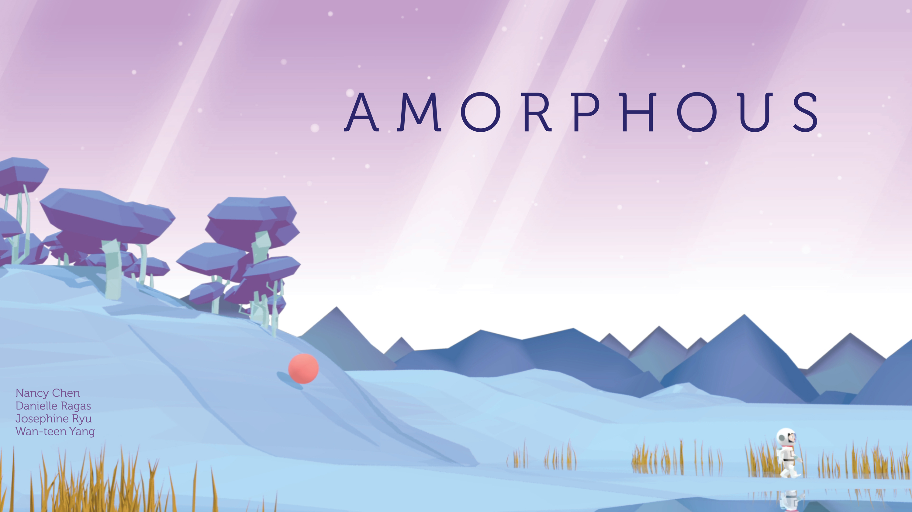

nancy chen

AMORPHOUS
Amorphous is a short 3D animation of an astronaut and a cat alien exploring in an alien world which was developed in Autodesk Maya and edited on Adobe programs. The ideation and storyboarding stage took our 4-people team the longest, while
rigging, animating and rendering took roughly 1.5 week with the assistance of about 15 school computers.
- TASKS Sketching, concept art, sound design, 3d modeling, rigging, animation, post production editing
- TOOLS Autodesk Maya, Adobe Premiere Pro, Adobe AfterEffects, Photoshop
- Danielle Ragas, Wan-teen Yang, Josephine Ryu

Concept Ideation
During the ideation stages, I was mostly focused on the main characters' designs. Although the cat's design had little changes from the beginning, albeit some minor body ratio adjustments, the astronaut's getup went through more stages.
In addition to developing the characters' designs, I started working on environment concept sketches and color palette selection for each area.
In addition to developing the characters' designs, I started working on environment concept sketches and color palette selection for each area.
Environment Design
In order to ensure that the world looks cohesive, we created intital environment concept sketches. To do that we first decided on the colour palettes for each of the 3 main environments: forest, grassland, and cave scenes. Specificially, we wanted the
forest to be a filled with pastel green, lime, and blue, the grasslands to be filled with bright orange, red, and yellow, and the cave to have a sparkly palette of dark blues, purples, and white. During this stage, my roles as the design
director included sketching out two concept environments (grassland and inside of the cave), as well as editing the colours and lightings of the environment sketches done by my team.


Modelling & rigging
Once the sketches for the characters were finalized, we moved on to modeling the cat, texture of the planets, and then the trees for the forest environment in Maya. While my team mate took over the environment layout of the forest, I took over her work
of rigging the cat, astronaut, and setting up eye movement controls, and the control circles constrained to the limbs for animation.
Animation
Since our group divided the video into four sections, I was responsible for the animation in the forest scene (0:13-0:47) which had 10 different shots. Each shot was animated in a pre-selected view and the process of animating and rendering took about
2 days.

Sound Editing
Since our group divided the video into four sections, I was responsible for the animation in the forest scene (0:13-0:47) which had 10 different shots. Each shot was animated in a pre-selected view and the process of animating and rendering took about
2 days.